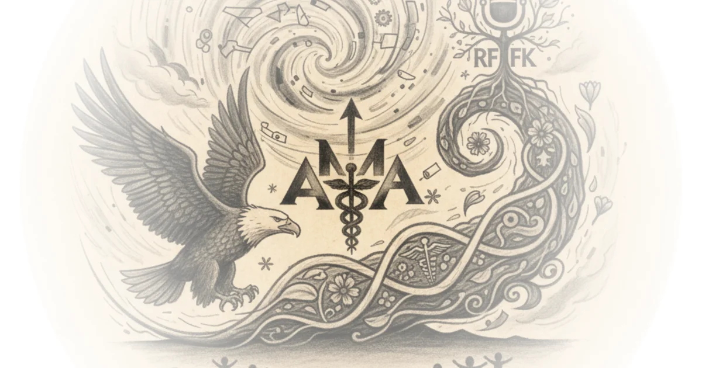

Adam friedland: Behind the adam friedland show Doom Scroll · Doom Scroll ·Mar 4, 2025 · 56 min read · Political Strategy
The united kingdom is a dystopian s*!thole! The Hated One · The Hated One ·Mar 2, 2025 · 15 min read · Political Strategy
Monopoly world: Oligarchy & authoritarianism Then & Now · Then & Now ·Feb 21, 2025 · 55 min read · Political Strategy
Briahna joy gray: Democrats can’t do anything Doom Scroll · Doom Scroll ·Feb 18, 2025 · 82 min read · Political Strategy
Europe reels at new world order Novara Media · Novara Media ·Feb 14, 2025 · 71 min read · Political Strategy
February q&a w/ michael and ash Novara Media · Novara Media ·Feb 10, 2025 · 53 min read · Political Strategy
“Deport them all” — who’s to blame for springfield’s immigrant crisis? More Perfect Union · More Perfect Union ·Feb 6, 2025 · 22 min read · Political Strategy
Quinn slobodian: What is neoliberalism? Doom Scroll · Doom Scroll ·Feb 5, 2025 · 67 min read · Political Strategy
Why Russia and kazakhstan pretend to be allies PolyMatter · PolyMatter ·Jan 31, 2025 · 13 min read · Political Strategy
Will menaker: The end of the left + liberal alliance Doom Scroll · Doom Scroll ·Jan 22, 2025 · 45 min read · Political Strategy
Says he will save American Jobs. John deere is calling his bluff More Perfect Union · More Perfect Union ·Jan 13, 2025 · 10 min read · Political Strategy
The world's dumbest bike lane law just passed in Canada Jason Slaughter · Not Just Bikes ·Dec 9, 2024 · 35 min read · Political Strategy
The hunter Biden pardon is an abuse of power Devin Stone · LegalEagle ·Dec 4, 2024 · 10 min read · Political Strategy
How did we get here? The rise of maha and rfk jr Rohin Francis · Medlife Crisis ·Nov 23, 2024 · 47 min read · Political Strategy 
What XI Jinping fears more than America PolyMatter · PolyMatter ·Nov 15, 2024 · 15 min read · Political Strategy
The most important election of our lifetimes Devin Stone · LegalEagle ·Oct 21, 2024 · 20 min read · Political Strategy
Who do voters blame for America's problems? It's not who you think More Perfect Union · More Perfect Union ·Oct 9, 2024 · 14 min read · Political Strategy
BlackRock: The conspiracies you don’t know More Perfect Union · More Perfect Union ·Sep 19, 2024 · 14 min read · Political Strategy
Elliott county voted for democrats for 144 years. Then came … More Perfect Union · More Perfect Union ·Aug 27, 2024 · 14 min read · Political Strategy
The rise and fall of the mainstream media Then & Now · Then & Now ·Aug 1, 2024 · 90 min read · Political Strategy
Why i'm embarrassed to be German Sabine Hossenfelder · Sabine Hossenfelder ·Jul 6, 2024 · 10 min read · Political Strategy
Novara reacts to bbcqt special w/ nigel farage & adrian ramsay Novara Media · Novara Media ·Jun 28, 2024 · 75 min read · Political Strategy
Novara reacts to BBC's sunak vs starmer election debate Novara Media · Novara Media ·Jun 26, 2024 · 100 min read · Political Strategy
Novara reacts to itv's multi-party election debate Novara Media · Novara Media ·Jun 13, 2024 · 113 min read · Political Strategy
Novara reacts to sky's 'battle for no.10' leaders special Novara Media · Novara Media ·Jun 12, 2024 · 124 min read · Political Strategy
Novara reacts to 7-party general election BBC debate Novara Media · Novara Media ·Jun 7, 2024 · 119 min read · Political Strategy